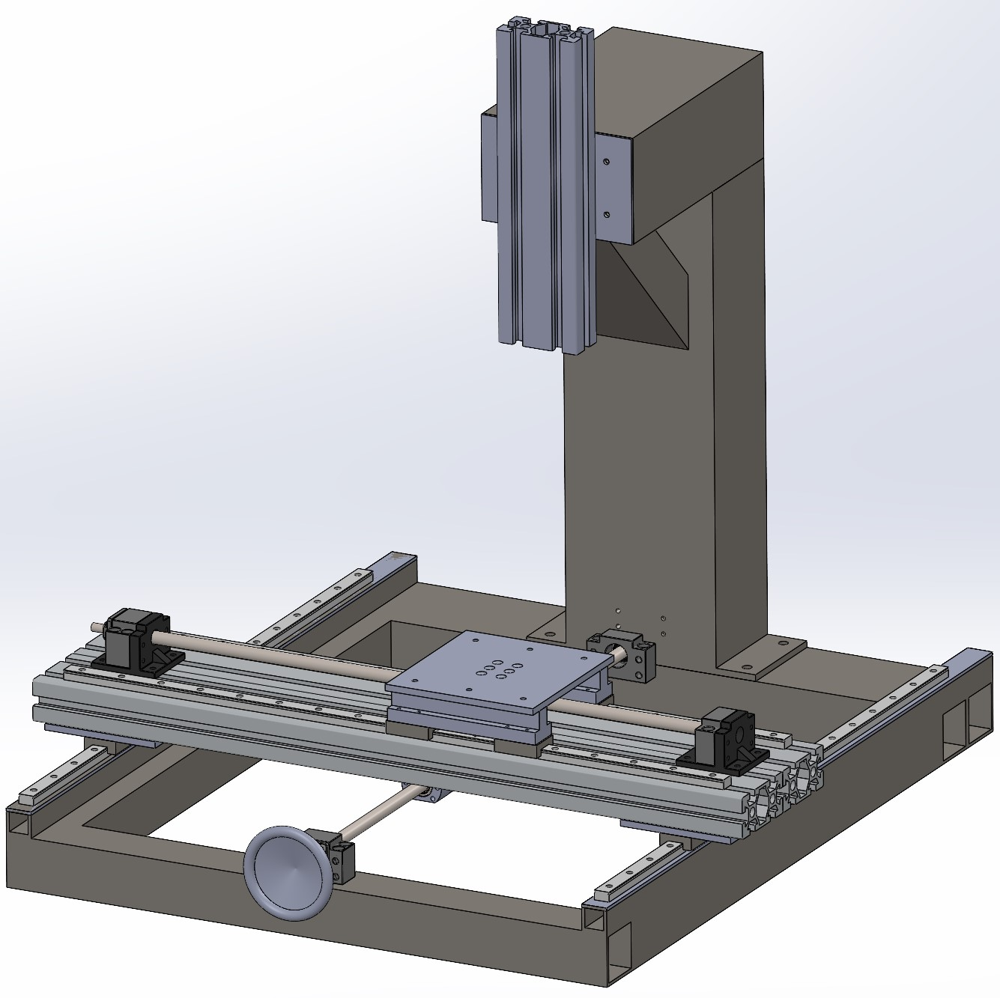

Milling Machine

CAD Milling
Project Description
3D printing is nice, but something, metal is required. A milling machine that is small enough to fit in your appartement, why not ;) This is a tought project because it is a 100% mechanical project. No electronics, no programming, just mechanics and require a lot of precision.
I already made a small CNC in the past but this time, I prefer to make a conventional milling machine to be able to operate it faster without the trouble of programming a path for the CNC
Current Status
The frame is all weld together. Linear rail for the X axis are mounted onto the frame.